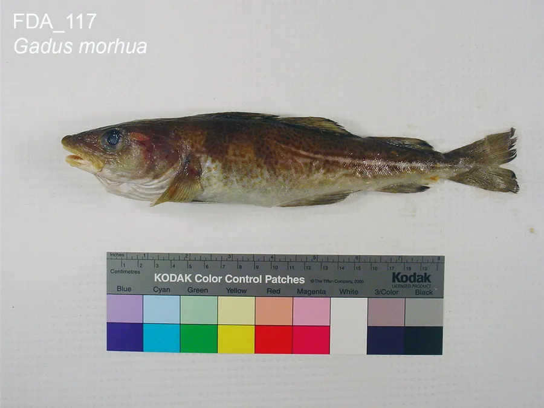

Merluzzo nordico e d'Alaska
Filetti islandesi e Cabo Norte, più il fiore jumbo per chi vuole il pezzo intero. Glassatura dichiarata: quando scriviamo 10% è il 10%.
Pezzature
400/600500/10001000+fiore jumbo 500+
Provenienza
IslandaNorvegiaAlaska
Formato
Chiedi disponibilità e prezzo
glassatura 10% · IQF